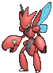
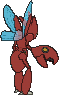

Scizor is a human-sized mantis similar to its evolutionary predecessor
Scyther, with a thick, metallic red exoskeleton and crab-like claws. Scizor's body is as hard as
steel, with claws strong enough to crush any hard object. They can be opened and closed like jaws,
and are patterned with black, eyespots with yellow "pupils".
They are tougher and stronger than Scyther, but have lost their
predecessor's speed. Instead, they spread their wings to cool off, and flap them very rapidly to
heat up, or to blow air to cool themselves off. While Scyther are mantis-like predator, striking
fast and simply evading potential pursuers, Scizor are coated with a red steel of sorts and
therefore not quite as agile. Once they engage their foes, either in the wild or at the direction of
a Pokémon Trainer in a Pokémon battle, they behave more like Scyther, striking quickly with their
powerful claws, raking more than pinching, and relying on their startling agility to evade attacks.
They will raise their claws and wave them around to scare off predators or foes, giving them the
appearance of having three heads.

